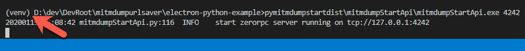
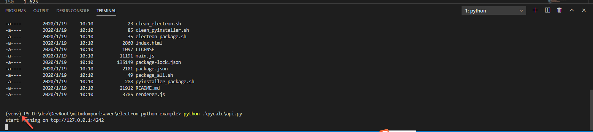

virtualenv
virtualenv是目前流行度最高的Python虚拟环境管理工具之一。
最大特点，简单方便易用。
安装
pip install virtualenv
使用
- 概述
- 创建：
virtualenv venv - 进入：
source venv/bin/activate- 管理库：用
pip- 安装：
pip install xxx - 保存虚拟环境=冻结依赖的库：
pip freeze > requirements.txt - 恢复虚拟环境=恢复安装依赖的库：
pip install -r requirements.txt
- 安装：
- 管理库：用
- 退出：
deactivate - 删除：
rm -rf venv
- 创建：
创建虚拟环境
- 语法
virtualenv YourVirtualEnvName - 最常用写法
virtualenv venv- 大家约定俗成把虚拟环境名称写成：
venv- 你看到项目根目录下有个
venv，往往就可以判断出，当前项目Python虚拟环境工具是virtualenv了
- 你看到项目根目录下有个
- 举例
virtualenv venv Using base prefix '/Users/limao/.pyenv/versions/3.8.0/Python.framework/Versions/3.8' New python executable in /Users/limao/dev/xxx/AppCrawler/venv/bin/python3.8 Also creating executable in /Users/limao/dev/xxx/AppCrawler/venv/bin/python Installing setuptools, pip, wheel... done.
- 大家约定俗成把虚拟环境名称写成：
激活虚拟环境并进入
- 概述
Mac/Linuxsource venv/bin/activate- 或
. venv/bin/activate
- 或
Winvenv\Scripts\activate.bat
- 详解
| Platform | Shell | Command to activate virtual environment |
|---|---|---|
POSIX |
bash/zsh |
$ source <venv>/bin/activate |
fish |
$ . <venv>/bin/activate.fish |
|
csh/tcsh |
$ source <venv>/bin/activate.csh |
|
PowerShell Core |
$ <venv>/bin/Activate.ps1 |
|
| Windows | cmd.exe |
C:\> <venv>\Scripts\activate.bat |
PowerShell |
PS C:\> <venv>\Scripts\Activate.ps1 |
- 说明
- 进入虚拟环境后，你会看到，终端最前面多出个
(venv)，表示你进入了虚拟环境了。- 举例
(venv) limao@xxx ~/dev/xxx/AppCrawler master ● (venv) D:\dev\DevRoot\mitmdumpurlsaver\electron-python-example>- 
- 
- 举例
- 进入虚拟环境后，你会看到，终端最前面多出个
确认Python版本
进入后，可以查看和确认，当前Python的版本和位置：
(venv) xxx python --version
Python 3.8.0
(venv) xxx which python
/Users/limao/dev/xxx/AppCrawler/venv/bin/python
包管理器
其中包管理，可以用：pip
pip的位置和版本：
(venv) xxx which pip
/Users/limao/dev/xxx/AppCrawler/venv/bin/pip
(venv) xxx pip --version
pip 20.0.2 from /Users/limao/dev/xxx/venv/lib/python3.8/site-packages/pip (python 3.8)
退出虚拟环境
deactivate
删除虚拟环境
如果要删除虚拟环境：直接删除当前虚拟环境的目录即可
命令：
rm -rf virtualenv_folder
典型的是：
rm -rf venv/
注：
- 其他很多虚拟环境工具，都是类似的逻辑，直接删除对应文件夹即可
virtualenvvenvAnaconda environmentpyenv
- 而有些虚拟环境工具，是有专门的命令的（在虚拟环境根目录中执行）
pipenvpipenv --rm
virtualenvwrapperrmvirtualenv
附录
查看virtualenv版本
查看此处virtualenv工具的版本：
virtualenv --version
16.7.9
文档
- 官方文档
- Virtualenv — virtualenv 20.4.8.dev5+g5657d56 documentation